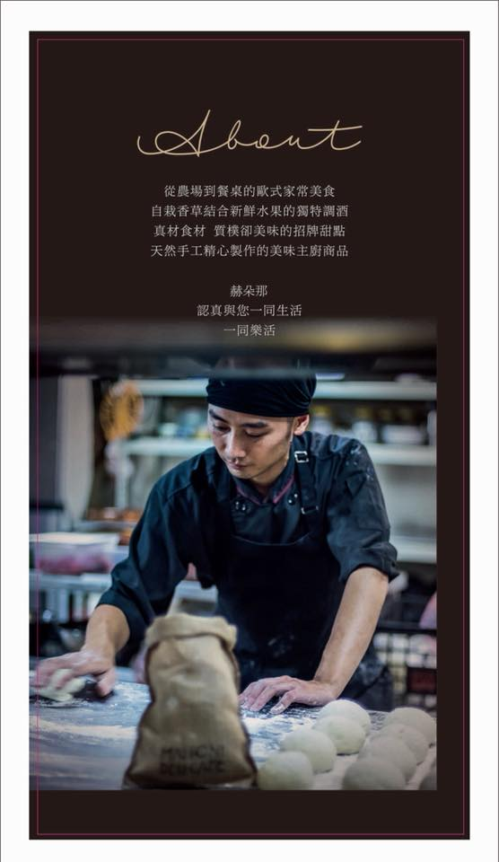
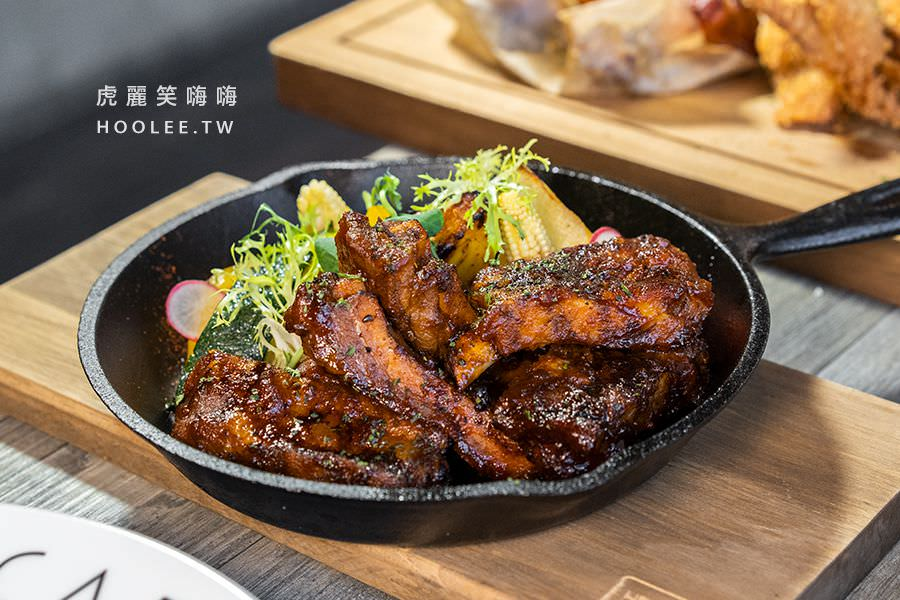

位在文山特區
提供義大利麵、燉飯、披薩、開胃小點等多種特製料理，
加上寬敞舒適的環境是約會聚餐好去處，非常適合情侶、朋友、家庭或公司團聚用餐，二樓還有包廂可容納12~16人左右。
喜歡海味的吃貨們蠻推薦選擇當季現流阿根廷青醬手工麵，海鮮魚貨都是來自海港及野生手釣直送，滋味比較鮮美香醇！
推薦可以大口啃食的德州碳烤豬肋排，還有能吃飽飽的美國頂級板腱牛松露起司燉飯也不錯，這道會在桌邊灑上帕瑪森起司哦～

▲德州碳烤豬肋排與醋漬彩椒 200元
愛吃肉肉的推薦必點！碳烤肋排十分軟嫩細緻，只需要輕輕咬開，
刷上特製醬碳烤吃起來帶有濃郁甜味，帶出酸香口感，還能搭配酸酸甜甜的醋漬彩椒享用解膩！